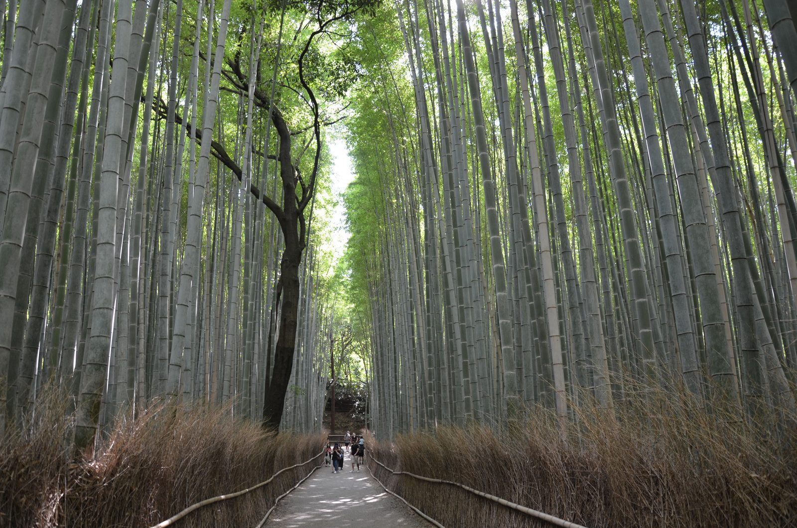
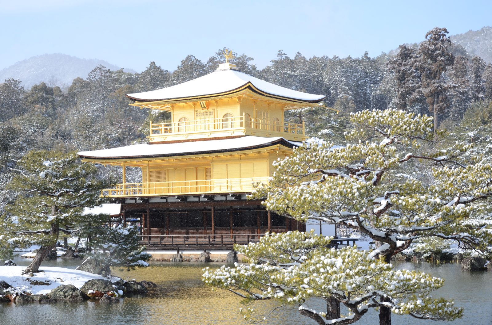
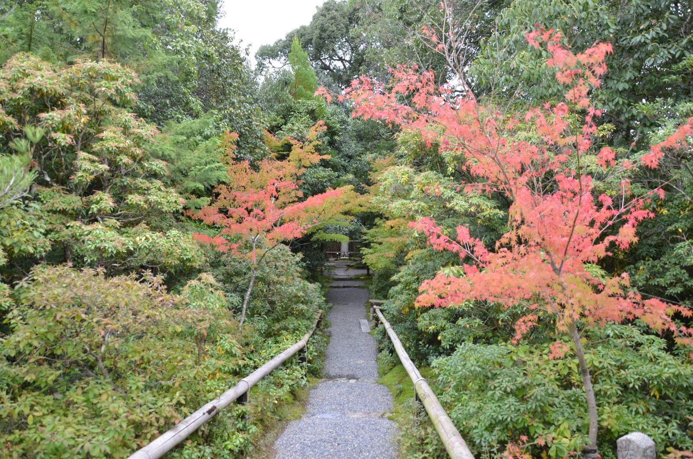
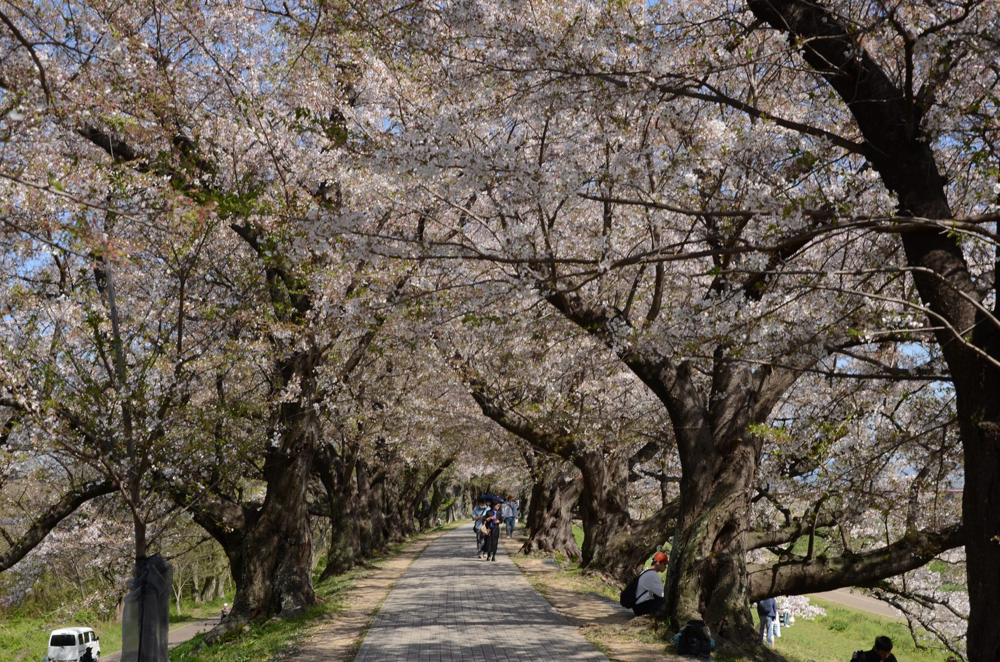
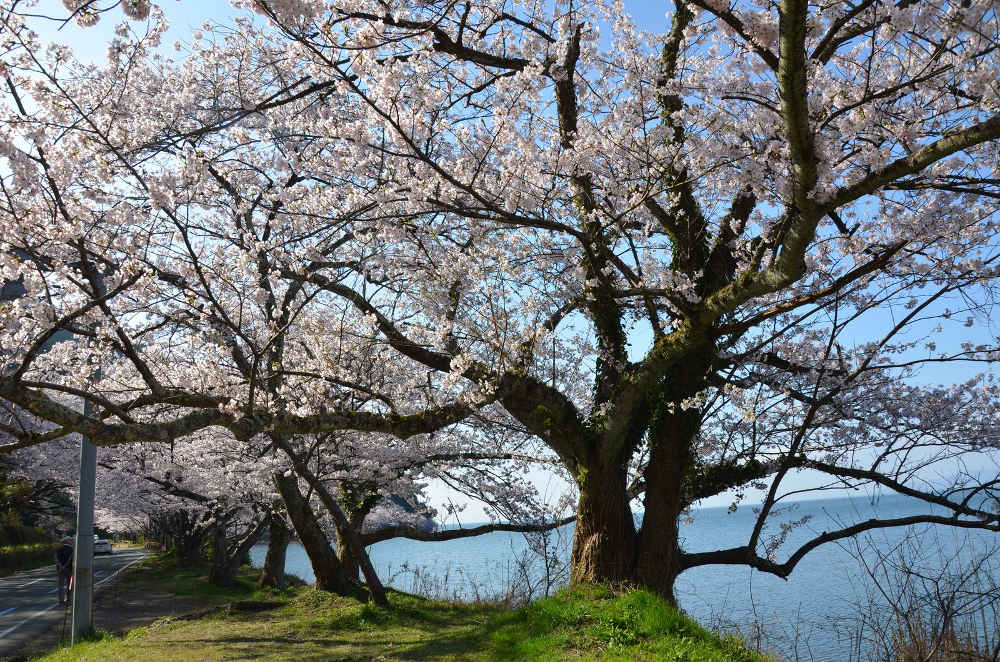
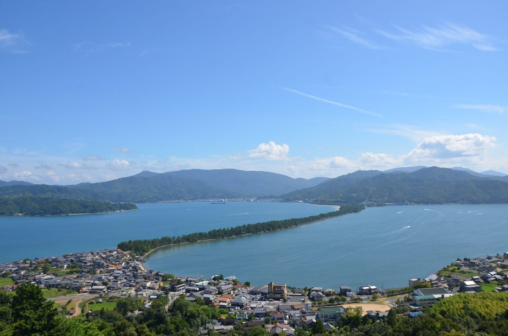

Kyoto, Shiga, Osaka, Kobe, Himeji, Kanazawa, Fukuoka, Hiroshima, Nanki & Shikoku
京都・滋賀・大阪・神戸・姫路・金沢・福岡・広島・南紀・四国 おすすめマップ
実際に歩いて「ここはいい！」と感じた場所だけを集めました。写真と地図、Googleマップのリンクつきなので、スマホひとつで出かけられます。
順番に回る1日ルート
Route番号の順にめぐると、1日で効率よく回れます。
-
 1日ルート
1日ルート叡山電鉄沿線
Along Eizan Railway Line出町柳から一乗寺、貴船、鞍馬へ。夜は先斗町で締めくくる、山と川の京都をめぐるルートです。
-

1日ルート京都 嵐山・嵯峨野
Arashiyama & Sagano, Kyotoバスで山の上の愛宕念仏寺へ。苔のお寺や竹林の小径を選びながら、坂道を下って渡月橋まで歩くルートです。
-
 1日ルート
1日ルート京都 東山
Higashiyama, Kyoto伏見稲荷の千本鳥居から、清水寺、産寧坂、八坂の塔、高台寺、南禅寺、永観堂へ。行きたい場所を選んで、南から北へ歩くルートです。
-

1日ルート京都 金閣寺〜北野天満宮
Kinkaku-ji to Kitano, Kyoto大徳寺から、池に映る金閣寺、龍安寺の石庭、御室桜の仁和寺へ。嵐電に乗って、夜桜の平野神社と天神さんの北野天満宮まで歩くルートです。
-
 1日ルート
1日ルート京都 西山
Nishiyama, Kyoto阪急で松尾大社へ。鈴虫寺の説法、苔寺の門前のおそば、竹林の地蔵院、秋の特別公開の浄住寺。嵐山の南の山すそを、静かに歩く半日ルート。
-

1日ルート京都 今宮神社と鷹峯
Imamiya & Takagamine, Kyoto今宮神社の門前で千年続くあぶり餅を食べて、市バスで鷹峯へ。光悦寺・源光庵・常照寺のもみじを、歩いて数分ずつ回ります。
-
 1日ルート
1日ルート京都 高雄の紅葉
Autumn in Takao, KyotoJRバスで高雄へ。清滝川の高雄橋を渡り、もみじの石段を神護寺へ。川沿いを歩いて指月橋の先の西明寺まで。
-
 1日ルート
1日ルート京都 醍醐寺の夜の紅葉
Daigoji by night, Kyoto秋の夜だけ公開される醍醐寺の伽藍。照らされた五重塔と、池に映る弁天堂のもみじ。2026年は11月20日〜12月6日。
-

1日ルート京都 淀・八幡の桜
Yodo & Yawata cherries, Kyoto3月は淀水路の河津桜、4月は背割堤の桜のトンネル。ケーブルで石清水八幡宮にも。京阪で回る、京都の南の春のマップです。
-
 1日ルート
1日ルート大阪 箕面
Minoh, Osakaダルマだらけの勝尾寺から森を歩いて箕面大滝へ。締めくくりは大阪名物のたこ焼きと地ビール。
-
 1日ルート
1日ルート滋賀 近江八幡（京都から日帰り）
Omihachiman, Shiga京都から電車で35分。八幡堀の舟、ロープウェーで上る八幡山からの琵琶湖、近江牛、ラ コリーナ。行きたい場所を選んで回るマップです。彦根城まで延長も。
-
1日ルート 京都 天橋立・伊根（京都から日帰り）
Amanohashidate & Ine, Kyoto京都から特急で約2時間。フリーパスで、カモメと一緒の観光船（自転車でも）で天橋立を渡り、傘松公園の「昇龍観」と、伊根の舟屋をめぐります。どちらを先に回るか選べます。
-
 1日ルート
1日ルート城崎温泉・竹田城跡（京都から日帰り）
Kinosaki Onsen & Takeda Castle, Hyogo京都から特急で約2時間20分。「天空の城」竹田城跡の石垣を歩いて、城崎温泉で柳並木の川沿いを外湯めぐり。行きたい外湯を選んで回るマップです。
-
 1日ルート
1日ルート友ヶ島・加太（京都から日帰り）
Tomogashima & Kada, Wakayama京都から電車で和歌山の加太へ。船で無人島の友ヶ島に渡り、苔むしたレンガの砲台跡と灯台を歩いて回ります。帰りは淡嶋神社にも。
-
 1日ルート
1日ルート湖東の紅葉（京都から日帰り）
Taroubou-gu, Eigenji, Hyakusaiji & Kyorinbo, Shiga742段の石段の先の太郎坊宮、渓谷の永源寺、苔むした参道の百済寺、夜の竹林がライトアップされる教林坊。行きたいお寺を選んで回る、秋のマップです。
-
 1日ルート
1日ルート神戸（京都から日帰り）
Kobe, Hyogo新快速で51分。布引の滝から北野天満神社と異人館の坂を下りて、三宮のかつ丼でお昼。最後はメリケンパークとポートタワーで港の景色を。
-
 1日ルート
1日ルート姫路・明石・須磨（京都から日帰り）
Himeji, Akashi & Suma, Hyogo世界遺産の姫路城と好古園、明石の魚の棚で明石焼のお昼、須磨浦公園のロープウェー、舞子から明石海峡大橋の夕日。海沿いを京都の方へ戻りながら回ります。
-

1日ルート海津大崎の桜と長浜（京都から日帰り）
Kaizu-Osaki & Nagahama, Shiga琵琶湖の岸に約4km続く海津大崎の桜並木を歩いて、午後は秀吉の城下町・長浜へ。長浜城、慶雲館、旧長浜駅舎、黒壁スクエアを回る春のマップです。
-
 1日ルート
1日ルート三井寺の夜桜（京都から日帰り）
Miidera, Otsu, Shiga京都から電車で30分の大津へ。春の約3週間だけライトアップされる琵琶湖疏水の桜並木と、三井寺の金堂・三重塔・観音堂を夜に歩きます。
おすすめスポット紹介
Guide回る順番は決めていません。気になる場所を選んでください。
-

スポット紹介丹後・但馬（天橋立・伊根・舞鶴・城崎温泉・豊岡）のおすすめ
Tango & Tajima京都から日帰りなら天橋立と伊根。泊まるなら豊岡のHostel Actを拠点に、城崎温泉・竹野の海・舞鶴・竹田城跡へ。1泊・2泊・3泊のモデルプランつき。
-
 スポット紹介
スポット紹介金沢のおすすめと日帰り旅
Kanazawa & Day Trips市内でゆったり2日間、ぜひ食べてほしい海鮮、そして金沢から日帰りで行ける場所。
-
 スポット紹介
スポット紹介福岡・唐津のおすすめと日帰り旅
Fukuoka, Karatsu & Day Trips福岡市内の見どころ、何度も通っているお店、そして唐津・糸島・太宰府・柳川・門司港・熊本への日帰り旅。
-
 スポット紹介
スポット紹介広島・宮島・尾道のおすすめと日帰り旅
Hiroshima, Miyajima & Onomichi平和記念公園と路面電車、実際に食べたお好み焼き、そして宮島・尾道・西条・呉への日帰り旅。
-
 スポット紹介
スポット紹介南紀（白浜・那智勝浦・熊野・串本）のおすすめ
Nanki, Wakayama白良浜と円月島、千畳敷・三段壁の白浜。那智の滝と熊野那智大社、勝浦のまぐろ、湯の峰のつぼ湯、本州最南端の潮岬。
-
 スポット紹介
スポット紹介四国（松山・道後と高知・高松）のおすすめ
Matsuyama, Kochi & Takamatsu松山城と道後温泉本館、実際に行った鯛めしとみかんジュースのお店。高知のひろめ市場と鰹のたたき、久礼の市場、いの町、高松の栗林公園。